A decision framework that helps owners of intellectual property choose a distribution model that fits their business type, built on unit economics, cost variance analysis, breakeven analysis and testable hypotheses.
Status note: certain works referenced by this analysis are in the initial stage of pre-publication copyright registration with the U.S. Copyright Office. No title-specific details are disclosed.
Prepared by Shamar Robinson · October 2026
On a $16.99 paperback, Amazon KDP returns $6.79 per unit while IngramSpark's bookstore route returns $3.33. About $2.55 of that $3.47 gap is the retailer discount, not printing or platform fees. See the variance bridge.
With $1,585 to $1,710 in Year-1 fixed costs, KDP breaks even at 158 unit pairs (one print plus one ebook) and IngramSpark at 272. Platform fees alone are recovered within 20 pairs. See the breakeven analysis.
PublishDrive's flat $13.99 monthly fee beats IngramSpark's per-sale fees only above 16.6 units per format per month. Below that, variable-cost models are cheaper. See the crossover.
Decision ask: approve a two-channel launch (KDP plus one wide-distribution route chosen by business vertical), with a 90-day A/B test on price and channel terms before committing to exclusivity. Go to the recommendation.
Every owner of intellectual property faces the same make-or-buy distribution question: which channels turn a protected work into the most contribution margin, at acceptable risk and cash timing? The answer differs by business type, so this analysis is organized into five decision verticals.
One work, Amazon-led discovery, limited capital.
Needs bookstore and library placement for a curated list.
Many titles and steady volume; fixed fees amortize well.
Owns an audience; sells through events, courses or a website.
Digital-first, wants reach beyond one retailer.
Stakeholders: IP owners, finance and FP&A partners, marketing leads, rights and contracts teams, and investors evaluating content businesses.
| Concept | How it is used here | Where else you see it |
|---|---|---|
| Cost variance analysis | Net royalty per unit vs a KDP baseline, split into channel, production and fee drivers | Manufacturing, SaaS, healthcare budgeting |
| Gross-to-net (GTN) | List price to net royalty waterfall | Pharma, CPG, music streaming |
| Contribution margin and breakeven | Units needed to recover launch costs | Retail, restaurants, hardware startups |
| Fixed vs variable cost crossover | Subscription vs per-sale fee models | Cloud pricing, payments, logistics |
| Sensitivity and scenario analysis | Tornado chart; bear, base and bull volumes | Corporate FP&A, infrastructure finance |
| A/B testing and breakeven lift | Price and channel-term experiments with sample sizes | E-commerce, product, marketing |
| Days sales outstanding (DSO) | 45 to 105 days from sale to cash | Every B2B business, working-capital planning |
| Pool-based payouts | Kindle Unlimited per-page rate | Music streaming pro-rata pools, ad networks |
| Returns reserve and counterparty risk | Returnable wholesale terms; retailer non-payment | Retail, distribution, insurance |
Full definitions are in the glossary.
Supply of new works is growing much faster than unit demand: ISBN output rose 32.5% in 2025 while print unit sales rose 0.3%. More works compete for the same buyers, so the margin kept per sale and the cost to launch matter more every year.
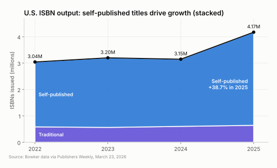
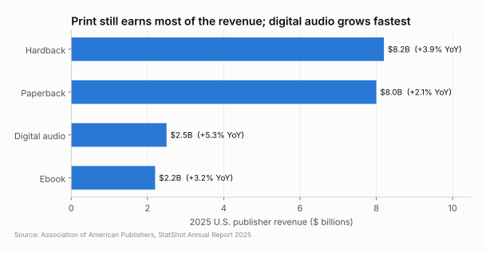
The stacked line shows self-published ISBNs climbing to 3.53 million in 2025. Hardback and paperback still bring in $16.2 billion of the $33.4 billion market, which is why print distribution choices carry the most dollars.
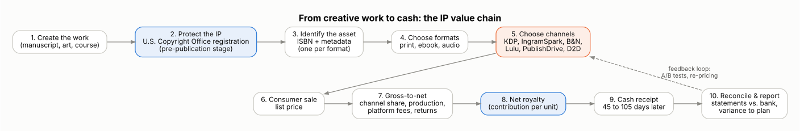
Step 2 is where rights are secured. Certain works covered here are in the initial stage of pre-publication copyright registration with the U.S. Copyright Office. Registration is a prerequisite for filing an infringement suit over a U.S. work and for statutory damages, so it is treated as a fixed launch cost ($85 Standard Application under the new schedule).
Steps 7 through 10 are where finance lives. Gross-to-net deductions, cash timing and reconciliation are the same disciplines used in film participations, music royalties and SaaS revenue operations.
| Platform | Print economics | Ebook economics | Fixed cost | Payment terms | Reach |
|---|---|---|---|---|---|
| Amazon KDP | 60% of list minus print | 70% ($2.99 to $9.99) | Free | ~60 days after month end | Amazon only |
| IngramSpark | List minus 35 to 55% discount, print, 1.875% fee | 85% of store payout | Free setup; own ISBN | ~90 days after month end | Bookstores, libraries, 45,000+ outlets |
| B&N Press | 55% of list minus print | 70% flat | Free; print ISBN free | ~30 days after month end | BN.com (U.S.) |
| Lulu | Retail: 50% fee, print, then 20% commission | Fee plus commission | Free; proof required | Monthly | Own store, retail, your site |
| PublishDrive | Ingram network, 0% commission | 100% of store payout | $13.99 to $83.99/mo | Monthly | 400+ stores |
| Draft2Digital | Print via partners | ~90% of store payout | $20 account fee | Monthly, ~60-day lag | Apple, Kobo, Google, libraries |
The options fall into three cost models: retailer-direct (KDP, B&N), wholesale with per-sale fees (IngramSpark, Lulu, Draft2Digital) and subscription with zero commission (PublishDrive).
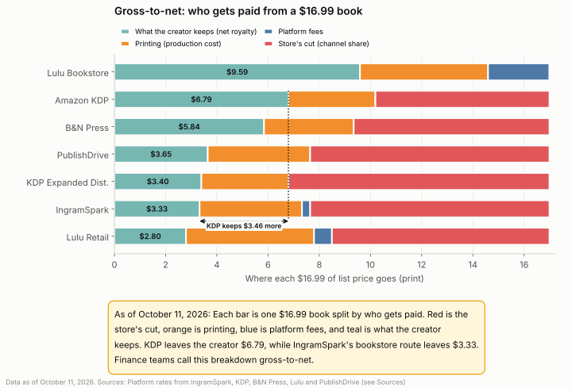
The gray channel share is the largest deduction on every wholesale route. Lulu’s own bookstore keeps $9.59 because no retailer takes a cut, but it brings almost no shoppers on its own. Print costs for IngramSpark, B&N and Lulu are planning estimates to be replaced with each platform’s calculator output.
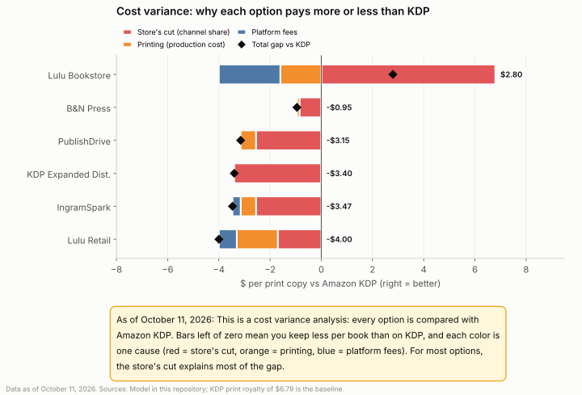
Each bar decomposes one platform’s variance against the KDP baseline into three drivers that sum to the total, the same price, cost and mix logic used in a budget-vs-actual review. For IngramSpark, the 55% discount costs $2.55, higher print costs $0.60 and the market access fee $0.32, for a total unfavorable variance of $3.47 per unit.
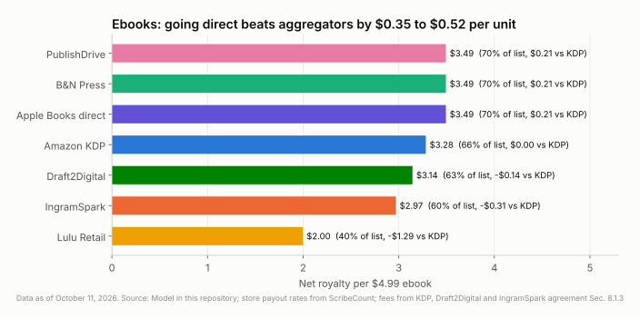
On a $4.99 ebook, direct stores pay $3.49. KDP pays $3.28 after a $0.30 delivery fee. Aggregators trade $0.35 to $0.52 per unit for one-upload reach, which is a classic take-rate versus convenience trade-off.
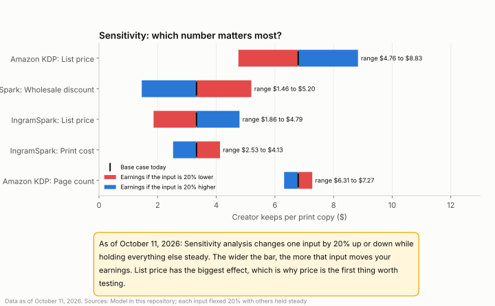
Flexing each input by 20% shows that list price moves KDP’s net royalty by $4.08 per unit, four times the effect of page count. On IngramSpark, the wholesale discount is the largest controllable lever, which makes discount terms the first thing to test.
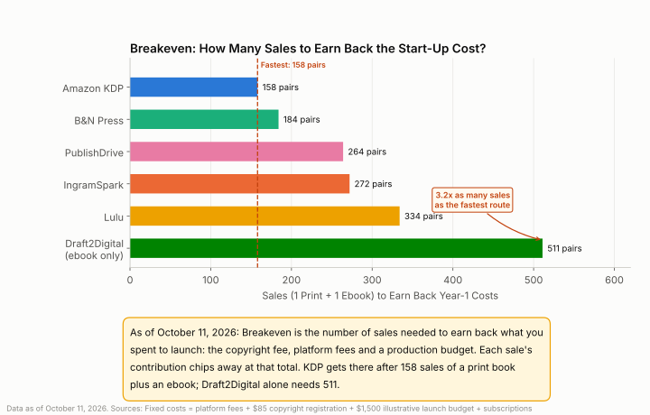
KDP needs 158 unit pairs and IngramSpark 272. Without the illustrative launch budget, platform-only fixed costs are recovered within 0 to 42 pairs, so the real breakeven risk sits in production spend, not platform fees. Stakeholders should replace the $1,500 placeholder with their own budget in the Excel model.
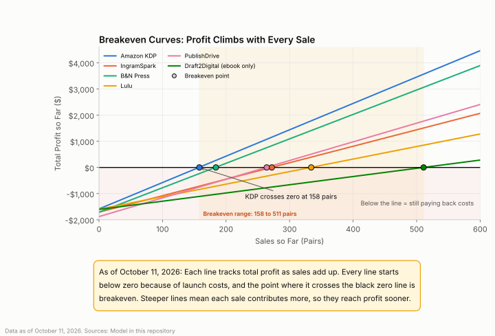
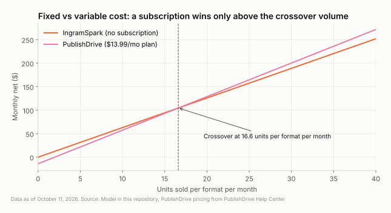
Left: each line crosses zero at its breakeven point, and steeper slopes mean higher contribution margin. Right: PublishDrive’s fixed fee overtakes IngramSpark’s variable fees at 16.6 units per format per month, and overtakes Draft2Digital for ebooks at 40.1 units per month.
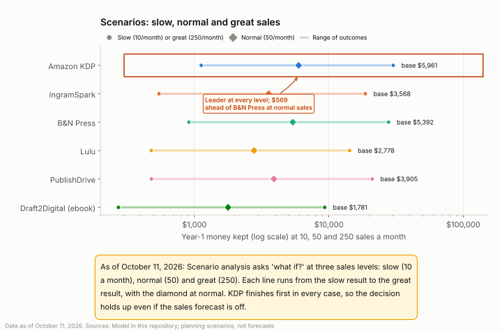
KDP leads in every scenario, followed by B&N Press. PublishDrive moves ahead of IngramSpark once volume clears the crossover, which happens in the base and bull cases. These are planning scenarios, not forecasts; reach differs by channel, so equal volume per platform is a simplifying assumption.
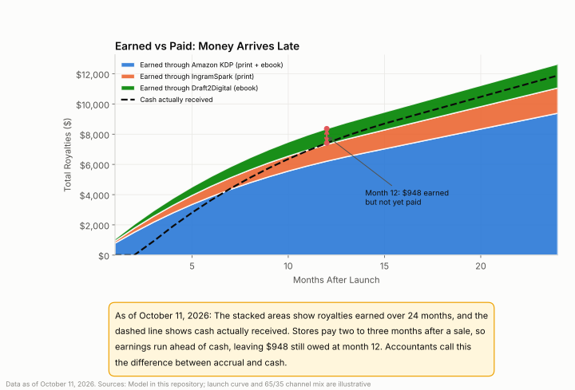
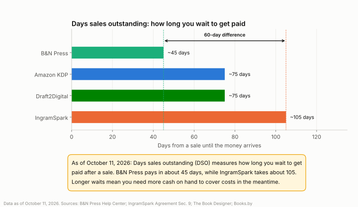
In an illustrative hybrid stack (KDP plus IngramSpark plus Draft2Digital), $948 of earned royalties is still uncollected at month 12. IngramSpark’s terms add about 60 days of DSO versus B&N Press, and the agreement also lets it hold payments while a retailer has not paid (counterparty risk).
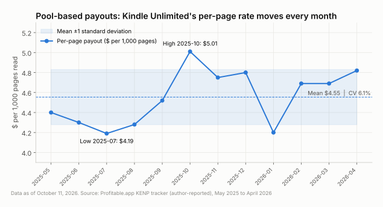
Kindle Unlimited pays from a monthly pool divided by pages read, the same pro-rata mechanism used by music streaming services. Over the last 12 reported months the rate averaged $4.55 per 1,000 pages with a 6.1% coefficient of variation, swinging from $4.19 to $5.01. In the 2025 Written Word Media survey, 38% of authors kept every book in KDP Select and 30% were fully wide.
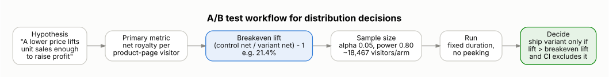
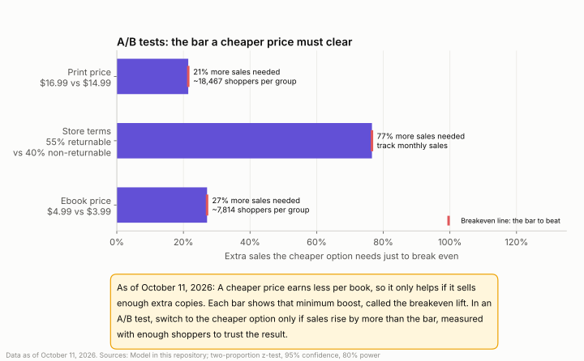
A price cut must lift unit sales by more than its breakeven lift to raise profit: 21.4% for a $16.99 to $14.99 print test and 27.1% for a $4.99 to $3.99 ebook test. Detecting a lift that size at a 2% baseline conversion takes about 18,467 visitors per arm. Retail platforms do not split traffic, so run time-boxed sequential tests or route paid traffic to two purchase links (for example, IngramSpark Share & Sell links).
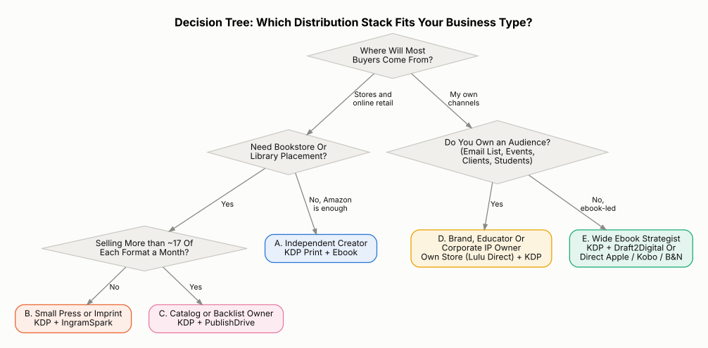
The thresholds come from the model: a 16.6-unit monthly crossover separates Vertical B from Vertical C, and owned-audience businesses (Vertical D) keep the most margin by selling direct, where Lulu Direct takes no revenue share.
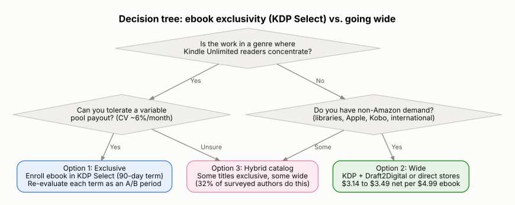
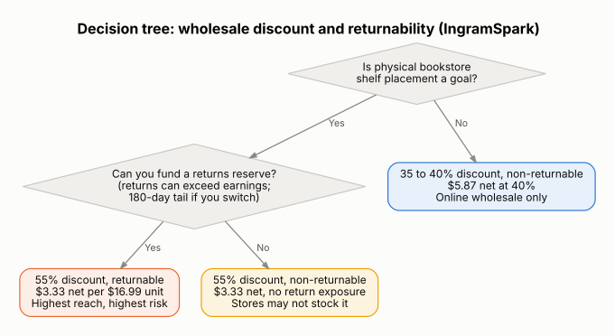
Exclusivity trades reach for pool income; returnability trades margin and return risk for shelf placement. Both are reversible on known terms (90-day KDP Select periods; a 180-day return tail on IngramSpark), so both are good candidates for time-boxed tests.
| Vertical | Option 1: Recommended | Option 2: Alternative | Option 3: Stretch | Breakeven marker | |
|---|---|---|---|---|---|
| A | Independent creator | KDP print + ebook | KDP + Draft2Digital (wide ebook) | KDP + KDP Select | 158 pairs |
| B | Small press or imprint | KDP + IngramSpark 55% returnable | KDP + IngramSpark 40% non-returnable | KDP + B&N Press + IngramSpark | 272 pairs (IngramSpark) |
| C | Catalog or backlist owner | KDP + PublishDrive | KDP + IngramSpark + Draft2Digital | PublishDrive only | 264 pairs; crossover 16.6/mo |
| D | Brand, educator or corporate | Lulu Direct on own site + KDP | IngramSpark Share & Sell links | Lulu Bookstore + KDP | Driven by owned traffic |
| E | Wide ebook strategist | KDP + direct Apple, Kobo, B&N | KDP + Draft2Digital | KDP + PublishDrive (above 40/mo) | Ebook-only economics |
Option 1 maximizes contribution per unit for each business type. Option 2 changes one variable and doubles as the B arm of an A/B test. Option 3 adds reach once volume supports it.
| Risk | What the agreement says | Rating | Mitigation | Reference |
|---|---|---|---|---|
| Returns liability | Returnable titles bill returns back to the IP owner; a 180-day tail applies after switching to non-returnable | High | Start non-returnable; test returnability later | Sec. 5.4.5 |
| Payment timing and offsets | Compensation paid ~90 days after month end; can be held or offset for returns and other Ingram accounts | Medium | Plan cash with DSO assumptions; keep a reserve | Sec. 8.5, 9 |
| Counterparty non-payment | IP owner bears its share if a retailer never pays | Low to medium | Monitor statements; reconcile monthly | Sec. 8.3 |
| Unilateral changes | Terms and pricing can change; compensation changes take effect after 30 days | Medium | Review notices; re-run the model on each change | Sec. 2 |
| Early release | Enabling distribution lets orders ship before the publication date | Medium | Enable distribution only at launch | Sec. 5.1.2 |
| Liability cap | Platform liability capped at $500; broad indemnity owed by the IP owner | Low frequency, high impact | Confirm rights and clearances before upload | Sec. 12, 13 |
Section references are to the IngramSpark Agreement (last updated March 20, 2025). This is a plain-language business summary, not legal advice.
List print and ebook on KDP for every vertical. Add one wide route chosen from the decision tree. Keep print non-returnable at launch and enable distribution only on the release date.
Run one A/B test per 90 days: price first, then channel terms. Pre-register the metric (net royalty per visitor) and the breakeven lift, and stop only at the planned sample size.
Hold a monthly variance review (budget vs actual by driver) and a quarterly re-forecast. Revisit exclusivity and subscriptions when volume crosses 16.6 units per format per month.
Success measures: breakeven reached within the planned unit count; contribution per unit within 5% of plan; cash received within the modeled DSO; one decision-grade A/B result per quarter.
Mainstream industry sources (AAP, Bowker, Circana BookScan, U.S. Copyright Office) frame the market; platform help centers and agreements set the rates. Figures reflect sources available as of October 2026.